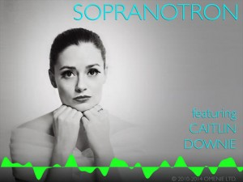
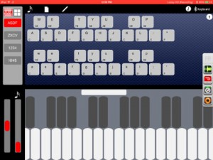
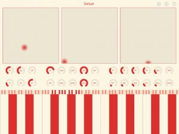
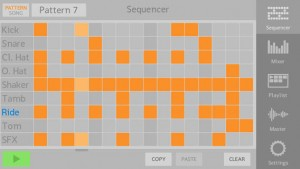
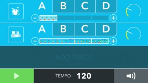
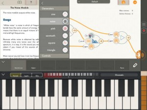
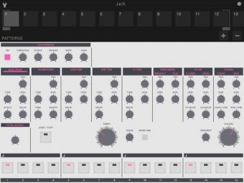
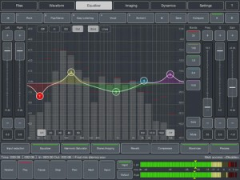
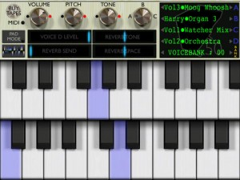

[appext 876339997]The first dedicated ‘Virtual Soprano’ instrument for iPad – add soaring operatic soprano tones to your recordings, or take a pitch-perfect Virtual Soprano on stage with you!
Here by popular demand is Omenie’s M3000 HD ‘English Soprano’ library, provided as a standalone instrument. Caitlin Downie, gifted soprano and national treasure, has been painstakingly recorded and assembled into a huge vocal collection. 525 different samples, 15 different voices, with chromatic sampling over the M3000’s 35-note range, and note stretching below and above the range to deliver 5 octaves in total.
3 distinct vowel vocalizations, ‘soft’ voices, ‘forte’ voices with huge projection and vibrato, staccato vowels and 3 different ensemble voices are provided. Two different playable instruments are available at the same time, one blended from a selection 3 of the 15 voices (‘A/B/C’), the other a single voice (‘D’). The ‘D’ voice may be assigned to programmable chord pads, or the two instruments may be played independently via class-compliant MIDI keyboards. 64 programmable ‘Voicebanks’ allow popular selections of voices to be saved and restored immediately for recording or performance.
Virtual MIDI on 2 separate channels and AudioBus support make Sopranotron a very flexible and powerful instument for adding vocal sparkle to recordings or live performances.
Sopranotron
Double Decker
[appext 842010101]The best MIDI controller is the one that you have with you. Double Decker transforms an ordinary Bluetooth keyboard into a sophisticated MIDI controller, giving you a much bigger playing surface, while still being portable. The app is designed to work with US/English keyboards; the key arrangement for other languages may not be compatible.
**************
** There are a few important limitations to be aware of! We would recommend reading the in-depth review of the app on Music App Blog, which gives a good overview of the features and limitations.
http://www.musicappblog.com/double-decker-review/
On iOS, an app can only receive keystrokes from a QWERTY keyboard when it is in the foreground. For this reason, Double Decker must be in the foreground to work; this is a limitation of iOS, and there is no way that we can work around it. The app is designed to send MIDI notes to other apps (running in the background), or MIDI to apps running in the foreground on other devices.
The iOS operating system only makes key press information available to apps, and not key release. For this reason, Double Decker cannot make a QWERTY keyboard operate like a typical (piano) keyboard.
Press a key on the Bluetooth keyboard to trigger a note. When you touch another key, the first note is silenced as the next note is played.
Tapping the space bar will silence all sounding notes. While it would obviously be better if lifting up on a key silenced a note, iOS does not provide this functionality for app developers.
**************
The app features a state-of-the-art Soundfont engine, advanced MIDI routing capability, support for Apollo MIDI over Bluetooth, and even Audiobus!
The keys are arranged with the two middle rows in a piano-style formation. Play a second instrument using the bottom row of keys, and two more instruments using the number keys and punctuation. Each key can be configured to trigger either a single note or a chord.
A second arrangement of the keyboard divides things into four grids, four-by-four each. This is great for finger drumming, and triggering samples and sequences.
Double Decker supports Soundfonts, opening up a world of different tones. The app also has full support for MIDI, giving almost unlimited sonic potential. Using the MIDI Learn feature in apps such as Loopy and Genome, you can start and stop recording, play synthesizers, and switch tracks, all with a Bluetooth keyboard.
If you have multiple iOS devices, you can link them together using the low latency connection provided by Apollo MIDI over Bluetooth. Run Double Decker in the foreground on one device to catch keystrokes, and then send MIDI to a second device, which can have a synthesizer or sequencer app in the foreground.
Key features of the app are the following:
* Innovative use of an external keyboard to trigger notes.
* Keyboard arranged into two groups, each with four different playing regions.
* Each region can be assigned a Soundfont patch, a set of MIDI destinations, or both.
* Soundfonts can be added using “open in” or iTunes file sharing.
* Each key in each region is configurable as either a note or a chord, with independent velocity control.
* Key configurations can be saved as presets, shared through email, or downloaded from the web.
* The app supports the Audiobus “input” slot.
* Built-in support as a Apollo MIDI over Bluetooth “A” endpoint.
Voxen
[appext 849089704]Voxen is a voice synthesizer. It lets you synthesize singing voices.
Any voice, not just the few voices that someone else designed into it.
Plus voices that no vocalist can sing.
No pitch shifting. No time warping.
Just good ol’ pure synthesis.
Voxen is based on the voice synthesis technology used by speech scientists and psychoacousticians around the globe. Even though it can be great fun to play with, it is not a toy. Voxen is intended for musicians, DJs and producers who are looking for new and different sources of sounds.
It’s time to set your aural imagination free…
FEATURES
– Eight note polyphony
– Keyboard range of more than ten octaves
– Three X-Y touchpads
– Twenty-eight vertical linear knobs
– Choice of dark or light background colour
– Eight choices of foreground colour
– Save and load user-defined patches
TECHNICAL DETAILS
For those who are interested in the more technical details, Voxen is a polyphonic formant synthesizer. There are three banks of knobs which control, respectively, the voice, the voice envelope and the formants. The six voice knobs control provide a modified Klatt 1989 voicing source. The ten voice envelope knobs control master amplitude and ADSR envelope for the voicing source and for a separate aspiration source. The remaining twelve knobs control the centre frequencies and bandwidths of the first four formants and the centre values and differences (spread) for a nasal formant/antiformant pair.
Each of the three X-Y touchpads controls a pair of parameters, f1 & f2, b1 & b2 and vibrato rate & vibrato depth.
Spectral tilt (or voice brightness) is controlled by the height you are touching the keys.
The overall aim of the user interface is to make it simple to control the many parameters in a live setting. The colours are based on the Solarized theme by Ethan Schoonover.
And if none of that made sense to you, don’t worry. You do not need to understand any of it to make cool sounds with Voxen.
SUPPORT
If you have any questions or problems, our community forum is the best place to find support: http://community.modphon.com
This is version 1.0, so please do not expect perfection. It would be nice to believe that all bugs have been found and eliminated, but years of experience says that there are still a few left to be found. If you do find a problem, please tell us so we can fix it!
There is additional functionality already in the pipeline for version 1.1 and beyond. Top of the list are MIDI and Audiobus support. We have great plans for Voxen. Visit our community forum to help shape the future of Voxen.
PS
Voxen is *not* a text-to-speech system. You cannot provide it with lyrics and expect it to sing them. Voxen is a synthesizer that acoustically simulates a glottis and vocal tract, allowing you to manually control the sound. It synthesizes sounds, not words.
Because a human voice is more complex than nearly any other musical instrument, a synthesizer of human voices is also very complex. To control one can require the real-time manipulation and coordination of dozens of separate parameters.
If you are looking for something that creates a musical performance from a piece of sheet music and some lyrics on a scrap of paper, hire a good vocalist. On the other hand, if you are looking some new and different sounds, use Voxen.
Steps – a Sequencer
[app 877295618]Steps turns your iPhone/iPod in a step sequencer that lets you create beats with ease.
Features:
– 16 patterns
– 16 steps per pattern
– 9 sound channels
– easily copy & paste patterns
– modify velocity & pitch for each step
– lowpass or highpass filter for each sound
– playlist: drag & drop patterns to create songs with up to 999 patterns
– xy-Effect pad
– master effects (lowpass, high pass, compressor, reverb)
– 13 high quality built in sample kits
– 1/16th swing control
– High Quality Export
– AudioCopy
Sequence by Incident
Sequence is like a drum machine you can use to create looping rhythms and melodies. Building on the design of a traditional step sequencer and similar musical devices, Sequence makes it incredibly easy to create a song with a variety of drums, percussion, and melodies.
Sequence makes it easy for anybody to create compelling music on-the-go with no experience whatsoever. The intuitive pattern grid means that you’re always in-time and in-key.
Sequence Highlights:
•Easy to Play – Intuitive design and simple pattern-grid makes composing songs quick and simple.
•Always In Tune – Every instrument is mapped to the same musical key
•Choose From 15 Preset Instruments – Drums (Rock, 808, Chiptune, House, Hand Drums), Melodic (Piano, Vibraphone, Violin, Guitar, Double Bass), and more!
•Record Your Own Samples + Create Custom Instruments – Take your creativity further by sequencing your own original sound recordings
•Multi-track Mixer for Adjusting Volume
Technical Features:
•15 Different Instruments
•Combine Samples Into Custom Instruments
•Sampler For Recording Custom Sounds
•Easily Save + Edit Your Sets
•Set Up to 4 Unique Patterns Per Instrument
•Extend Loops to 1-, 2-, or 4- Measure Phrases
[appext 844637457]
Modal Pro
[appext 868666685]Modal Pro is a powerful app that allows you to build your own synthesizers and effects by connecting various modules together. Inspired by classical modular synthesizers, Modal Pro is nevertheless designed specifically for the iPad with touch controls that allow you to tweak the sound just the way you want it.
More than a tool for building and playing, Modal Pro is also a great learning companion. Each module is documented in detail and an extensive tutorial is included to help even absolute beginners discover the world of synthesizers. Modal Pro allows you to explore the world of sound in your living room, on the train, at school or on stage.
[Features]
* Flexible and Intuitive Patching
Modal Pro allows you to connect modules whichever way you want. You can use any module to control any other module. You can even connect a module to itself. You’re not guaranteed to get an interesting sound, or even any sound at all but you’re guaranteed not to break anything. The touch interface allows you to rapidly connect and disconnect modules so that you can easily explore all sonic possibilities.
* Easy-to-Use Touch Controls
Modal Pro features interface elements such as its custom “double sliders” that allow you adjust each detail of the sound intuitively and accurately. Controls are adjusted specifically for each type of parameter.
* Analog Modeled Oscillators
Modal Pro’s oscillator modules are built to emulate the sound of classic analog synthesizer. The traditional waveforms sound rich and warm but because they are modeled rather than sample-based you can modulate them freely, in real-time and at audio rate. Go ahead, build an FM synth with bite, with sawtooths!
* Two Workspaces
Modal Pro features two workspaces where you can build instruments or effects. The “Polyphonic Workspace” is typically where you build instruments, and offers up to 8 voices of polyphony. (Actual polyphony will vary depending on your iPad’s speed and complexity of the instrument.)
The Polyphonic Workspace is connected to the “Monophonic Workspace.” As the name implies, instruments that you build here can only play one sound at a time. This is the perfect place, however, for building effects that process the output of the Polyphonic Workspace.
The two workspaces are entirely separate. You save and load work on these workspaces independently so that you can easily change the effects that are applied to your polyphonic instrument.
*The Preset Slider
The state of an instrument or effect can be saved as a preset. These presets are stored in the “Preset Slider,” which not only allows you to recall these states but also interpolate between them, making fluid and sometimes surprising transitions between presets possible.
*The Keyboard
Modal Pro features a keyboard optimized for the iPad’s screen. The standard chromatic piano keyboard is complemented with many fixed-scale keyboards. Adjustable portamento allows you to slide notes individually.
*Comprehensive Help
Feeling lost? Touch any module and the “Live Help” window will display a detailed description featuring not only an explanation of the module’s features but also advice about how to use it to get great sounds.
Modal Pro also comes with a lengthy tutorial to guide you through every feature, building your own simple synthesizer and effect along the way. In following releases, more tutorials will be added to help you learn the basics of sound design.
[Specifications]
* Modules
– Oscillators
Sine/Square/Triangle/Sawtooth/White Noise/Pink Noise
– Controls
ADSR(Envelope)/Simple Curve
– Modulators
Amplifier/Mixer/Crossfade/Ring Modulator/Sample & Hold
– Effects
Triple Filters/Delay/Lo-Fi
* MIDI Controls
Note/Volume/Preset Control
* Keyboard
Width : 9 octaves(scrollable)
Portamento : 3 presets(None/Legato/Glissando, intermediate value selectable)
Scales : 24
* Outside-App Communication
CoreMIDI, Inter-App Audio, AudioCopy, AudioBus
BOOM 909!
[app 857511142]Boom 909 integrates one of the most popular drum machines of the 80’s into the modern mobile producers workflow.
With Boom 909, getting the classic 909 drum sounds into your music has never been easier. Audiobus compatibility, background audio, and audio export options allow Boom 909 to fit into your music without slowing you down.
Personalize your beats with the sound of the 909!
Features:
• Step sequencer
• High fidelity audio
• CoreMIDI
• Audiobus and background audio modes
• Record and export live performance to Soundcloud, Audio Copy, email and iTunes file sharing
• Compressor
• Swing
• Overdrive
Boom 909 provides the superb audio quality found in our other Pulse Code apps. Along with the classic drum sounds, Boom 909 has a built in compressor that is tuned to add punch to your drum beats. Soft saturation overdrive rounds out the signal chain adding warm crunch to your beats.
Using Boom 909 with Audiobus allows you to add any number of Audiobus compatible effects as well as record your beats into the app of your choice. Writing beats is easy by using the internal step sequencer or trigger the drums with CoreMIDI. Control your groove with two swing variations.
Audio Mastering
This one has been around since last year and was the first of its kind until Final Touch recently landed, but the good news is you can currently get this (and Final Touch) at a bargain price!
[appext 640515541]The first fully functional professional quality audio mastering application for iPad. For everyone who wants to take their final mixes to the next level. Precise control of all parameters and highest quality audio processing, the most important part of any mastering, is the base of this application.
This all-in-one tool allows you to finalize the completed mix, record a track, convert audio formats, change sample rate, convert bit depth, cut part of a track for preview and apply fade-in and fade-outs. Support for Inter-App Audio and Audiobus allows you to use Audio Mastering together with other music applications. Moreover, with an external audio interface, you can use this application as a powerful sound processor or insert effect in your studio and integrate it with other studio hardware.
The easy-to-use interface lets you tweak all the controls in real time while auditioning the result as you make parameter adjustments. Using a unique feature – two different control modes – you can quickly and easily adjust the final mix in basic mode, or fine-tune the settings in more details for the best possible sound in advanced mode. Includes built-in presets that allow you to quickly find a suitable starting point for your music and then tweak the processing to get a desired result.
M3000 Free Edition
A fully-functional version of Mellotronics M3000 50th Anniversary Edition, an authentic recreation of Streetly Electronics’ M4000 tape-replay instrument. The app includes 5 authentic tapes from Streetly Electronics’ production library, all authentic mellotron voices. In-App Purchases allow the full voice set of the 50th Anniversary Edition to be downloaded, and many other voices as well.
Apart from the limited voice set included with the app, no functionality is removed in this free edition. MIDI and AudioBus is fully functional, including ‘Two Trons’ mode where 2 different MIDI channels can control the A/B/C and D voices.
[appext 846728891]
MotorsMob
I don’t know how much value music makers will get out of this qurky new audio app, but it’s a nice free addition to any sound designers collection. Get ready to feel the ‘revs’ 🙂
[appext 860498413]MotorsMob is an engine sound synthesizer. It simulates realistic existing cars as well as futuristic ones. Simply choose your preferd car, and enjoy the roaring ride !


{kind=link}
{kind=link}
{kind=link}
{kind=link}
{kind=link}
{kind=link}
{kind=link}
{kind=link}
{kind=link}